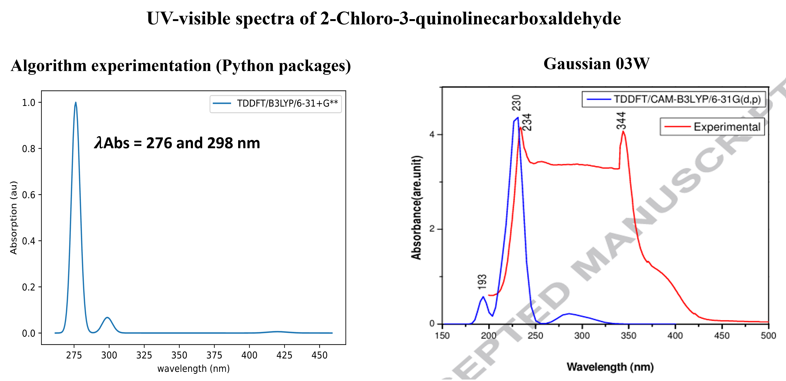

TD-DFT
This page contains a Python script to calculate the electronic excitation energies using time-dependent density functional theory (TDDFT).
Note
This script requires the tdscf module (frequency domain), it performs a ground-state Kohn Sham calculation to obtain the occupied and virtual orbitals. The results are reported as vertical excitation energies (in eV), corresponding wavelengths (nm) and oscillator strengths.
tddft.py
#!/usr/bin/env python
# coding: utf-8
# edit by dindagustiayuedu@gmail.com
# Import package
from pyscf import gto, scf, dft, tddft
mol = gto.M(atom="opt_mol.xyz")
# set basis set
mol.basis = "-----"
# Set DFT functional
mf = dft.RKS(mol)
mf.xc = '-----'
# initialize the mf object in solvent
mf = mf.DDCOSMO()
mf.with_solvent.eps = 4.8069 # example: chloroform
mf = mf.run()
# setup TDDFT
td = tddft.TDDFT(mf)
# set type and number of states required
td.singlet = True
# run TDDFT
td.kernel()
# Analyze to show a table of excitations
td.analyze()
# Plot spectrum
def plot_absorption(td_obj, step = 0.01, sigma = 0.05):
import scipy.constants as cst
import numpy as np
from scipy.stats import norm
import matplotlib.pyplot as plt
# get transition can convert to eV
transitions = td_obj.e * 27.2114
# get oscilator strengths
f = td_obj.oscillator_strength()
# get minimum and miximum x - value for plot
minval = min([val for val in transitions]) - 5.0 * sigma
maxval = max([val for val in transitions]) + 5.0 * sigma
# number of data points in line
npts = int((maxval - minval) / step) + 1
# generating the plot
eneval = np.linspace(minval, maxval, npts)
lambdaval = [cst.h * cst.c / (val * cst.e) * 1.e9
for val in eneval] # in nm
# sum of gaussian functiona
spectra = np.zeros(npts)
for i in range(len(transitions)):
spectra += f[i] * norm.pdf(eneval, transitions[i], sigma)
spectra /= spectra.max()
# plot the spectrum
plt.plot(lambdaval, spectra, linestyle="--", label ="Simulation")
plt.xlabel("wavelength (nm)")
plt.ylabel("Absorption (au)")
plt.legend()
plt.savefig("tddft.svg", bbox_inches="tight")
# Plot the absorption from td
plot_absorption(td)
For example the UV-visible spectra of 2-Chloro-3-quinolinecarboxaldehyde molecule obtained by b3lyp/6-31+g** dft calculation:

Table summary of UV-vis excitation energy and oscillator strength for 2-Chloro-3-quinolinecarboxaldehyde calculated by B3LYP/6-31+G** method.
S.No |
Exp. Wavelength (nm) |
TDDFT/B3LYP/6-31+G** |
Symmetry |
Major contribs |
||
Energy (cm-1) |
Wavelength (nm) |
Osc. Strength |
||||
1 |
344 |
23811.2 |
419.97 |
0.0001 |
Singlet A |
HOMO -> LUMO (82%), HOMO -> L+1 (11%) |
2 |
33478.4 |
298.7 |
0.0006 |
Singlet A |
HOMO -> L+1 (72%), HOMO -> LUMO (14%) |
|
3 |
36212.2 |
276.15 |
0.0089 |
Singlet A |
H-1 -> LUMO (53%), H-2 -> LUMO (29%), H-1 -> L+1 (12%) |
|
4 |
36587.1 |
273.32 |
0.0015 |
Singlet A |
H-3 -> LUMO (88%), HOMO -> L+1 (10%) |
|
5 |
257 |
39709.3 |
251.83 |
0.0754 |
Singlet A |
H-1 -> LUMO (39%), H-2 -> LUMO (35%), H-1 -> L+1 (19%) |
6 |
234 |
41254.1 |
242.4 |
0.0009 |
Singlet A |
H-3 -> L+1 (92%) |
7 |
45226.3 |
221.11 |
0.0006 |
Singlet A |
HOMO -> L+2 (73%) |
|
8 |
46219.2 |
216.36 |
0.3592 |
Singlet A |
H-1 -> L+1 (38%), H-2 -> LUMO (22%), H-5 -> LUMO (18%), H-2 -> L+1 (12%) |
|
9 |
46974.8 |
212.88 |
0.0003 |
Singlet A |
H-4 -> LUMO (95%) |
|
10 |
47605.4 |
210.06 |
0.2637 |
Singlet A |
H-2 -> L+1 (64%), H-1 -> L+1 (17%) |
|
discussion

Python packages vs Gaussian software simulations of 2-Chloro-3-quinolinecarboxaldehyde UV-vis spectra.